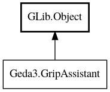

GripAssistant
Object Hierarchy:

Description:
public interface GripAssistant : Object
Provides a mechanism for grips to use functionality in the GUI (dependency inversion).
All known implementing classes:
Content:
Methods:
- public abstract void device_to_user (double dx, double dy, out int ux, out int uy)
Convert device coordinates to user coordinates
- public abstract void invalidate_round_grip (double x, double y)
Invalidate the graphical representation of a round grip.
- public abstract void invalidate_square_grip (int x, int y)
Invalidate the graphical representation of a square grip
- public abstract int snap_angle (int angle)
Snap an angle using the current snap mode
- public abstract void snap_point (ref int x, ref int y)
Snap a point using the current snap mode
- public abstract void user_to_device (double ux, double uy, out double dx, out double dy)
Convert user coordinates to device coordinates
Inherited Members:
All known members inherited from class GLib.Object
- interface_find_property
- interface_install_property
- interface_list_properties
- @new
- new_valist
- newv
- new_with_properties
- add_toggle_ref
- add_weak_pointer
- bind_property
- connect
- constructed
- disconnect
- dispose
- dup_data
- dup_qdata
- force_floating
- freeze_notify
- @get
- get_class
- get_data
- get_property
- get_qdata
- get_type
- getv
- is_floating
- notify_property
- @ref
- ref_sink
- replace_data
- replace_qdata
- remove_toggle_ref
- remove_weak_pointer
- @set
- set_data
- set_data_full
- set_property
- set_qdata
- set_qdata_full
- set_valist
- setv
- steal_data
- steal_qdata
- thaw_notify
- unref
- watch_closure
- weak_ref
- weak_unref
- notify
- ref_count